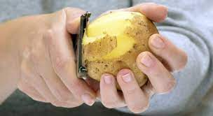
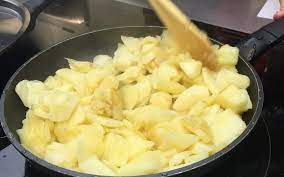
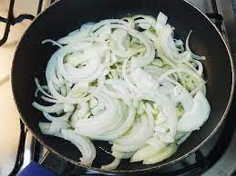
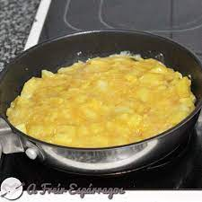
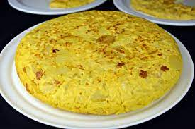

Pasos para realizarla
Inicio
Ingredientes
Pasos
Contacto
- Pela las patatas y córtalas en rodajas no muy finas con la mandolina.
Hay que secarlas bien para eliminar toda la fécula.

- Fríelas en abundante aceite de oliva virgen extra. Escurre y reserva.

- Pela y corta la cebolla en gajos. Fríela en el aceite de las patatas
a fuego lento para que quede pochada y reserva.

- Bate los huevos y añade sal. Mezcla las patatas con los huevos. Deja
reposar para que la patata se impregne bien del huevo.
- Pon a calentar una sartén con un chorrito de aceite a fuego medio.
Vierte la mezcla de huevo y patata en la sartén y deja que cuaje.

- Añade la cebolla. Con ayuda de un plato dale la vuelta y
deja al fuego hasta que cuaje por el otro lado.
- Y tras seguir estos pasos, estará lista para ser servida y para saborearla!
